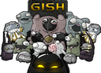
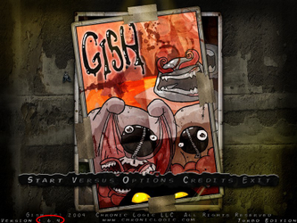
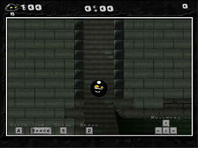
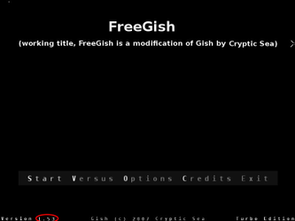
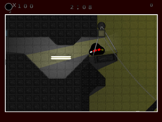
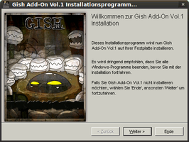

Gish
Dieser Artikel wurde für die folgenden Ubuntu-Versionen getestet:
Ubuntu 16.04 Xenial Xerus
Zum Verständnis dieses Artikels sind folgende Seiten hilfreich:
 Ein ganzer Klumpen Held! Stell dir vor, du bist ein Ball aus Teer und durchgedrehte Monster haben deine Freundin entführt! Die ist nicht aus Teer – sondern jung und süß! Dein Weg führt dich hinab in den Untergrund. Eine Welt von der keiner wusste, dass sie überhaupt existiert. Tief unter der Stadt, unter den Häusern und Straßen, kämpft sich Gish durch tückische Labyrinthe, mörderische Fallen und trifft auf irrwitzige Kreaturen – den Bewohnern dieser Untertage-Stadt. Die wollen nicht, dass du hier herumrollst. Und das lassen sie dich spüren! Zeig ihnen was nur ein Teerball kann und befreie deine Liebste aus den Fängen des kranken Wahnsinns!
Das Spiel steht als kommerzielle Version oder auch als kostenlose Version zur Verfügung. Diese unterscheiden sich u.a. im Leveldesign.
|  |  |
| Hauptmenü | Spielszene |
Features:
Dynamische Physik und Echtzeit-Lichtberechnung
Über 10 verschiedene Arten von Gegnern
Viele versteckte Geheimnisse
34 Level im Story-Modus
5 "Super-Secret" Level
6 verschiedene Minispiele
Über 20 Sammellevel
Zerstörbare Umgebung
Vorbereitung¶
Folgende Pakete müssen ggf. noch installiert [1] werden:
libalut0
libsmpeg0
 mit apturl
mit apturl
Paketliste zum Kopieren:
sudo apt-get install libalut0 libsmpeg0
sudo aptitude install libalut0 libsmpeg0
Installation¶
Chronic Logic¶
CD-Version¶
In den Ordner linux auf CD wechseln. Die Datei gish_g_linux.tar.gz in das Homeverzeichnis entpacken [2] und anschließend in den neuen Ordner gish wechseln. Hier die Datei gish ausführbar [3] machen. Abschließend legt man eine symbolische Verknüpfung zu libopenal.so.0 an [4] [5]:
sudo ln -s /usr/lib/libopenal.so.1 /usr/lib/libopenal.so.0
Hinweis:
Auf der CD ist Version 1.4  des Spiels enthalten. Somit sind einige Bugs noch nicht behoben worden. Ein Starter für 64-bit wurde offiziell erst mit Version 1.6 veröffentlicht.
des Spiels enthalten. Somit sind einige Bugs noch nicht behoben worden. Ein Starter für 64-bit wurde offiziell erst mit Version 1.6 veröffentlicht.
Entwicklerseite¶
Nach dem Erwerb des Spiels auf chroniclogic.com die in der Email angegebene Seite aufrufen und die Datei gish_1_6.tar.gz herunterladen und entpacken [2] (z.B. nach ~/Spiele/Gish). Über gish_64 bzw. gish_32 kann das Spiel gestartet [7] und auf Wunsch ein Menüeintrag [8] vorgenommen werden.
Humble Indie Bundle #2¶
Das Spiel ist beim Humble Indie Bundle als .deb-Paket verfügbar. Das Spiel ist nach der Installation [6] im Menü unter Gish zu finden.
Optionen¶
Das Spiel kann mit weiteren Optionen gestartet werden:
| Optionen | |
| Option | Beschreibung |
-sound | Sound aktivieren |
-nomusic | Musik ausgeschaltet |
-nosound | Sound deaktiviert |
|  |  |
| Hauptmenü | Spielszene |
FreeGish¶
Das Spiel kann aus den Paketquellen installiert [1] werden:
freegish
mit apturl
Paketliste zum Kopieren:
sudo apt-get install freegish
sudo aptitude install freegish
Im Menü kann es über freegish aufgerufen werden.
Quellcode¶
Um FreeGish zu kompilieren ist es nötig ein paar Pakete zu installieren [1]:
cmake
git-core
libopenal-dev
libsdl1.2-dev
libvorbis-dev
mit apturl
Paketliste zum Kopieren:
sudo apt-get install cmake git-core libopenal-dev libsdl1.2-dev libvorbis-dev
sudo aptitude install cmake git-core libopenal-dev libsdl1.2-dev libvorbis-dev
Mittels git werden die benötigten Dateien heruntergeladen und das Spiel anschließend kompiliert [4] [9]:
git clone git://github.com/blinry/gish #Ursprüngliche Variante cd gish mkdir build cd build cmake .. make
Über gish kann das Spiel aus dem Ordner heraus gestartet [7] und ebenfalls ein Menüeintrag erstellt werden [8].
Um mit der Engine die Inhalte der Vollversion nutzen zu können benötigt man von diesem die Ordner:
animation,
level,
music,
sound,
texture und
tile01 bis tile07.
|  |
| Gish - AddOn Vol. 1 |
Bonuslevel¶
Auf halycon.de  , holarse-linuxgaming.de
, holarse-linuxgaming.de  , crypticsea.com oder application-systems.de kann man zusätzliche Level, Kampagnen und Minispiele herunterladen. Diese entpacken [4] und den Inhalt in den Ordner /level im Installationsverzeichnis kopieren [6].
, crypticsea.com oder application-systems.de kann man zusätzliche Level, Kampagnen und Minispiele herunterladen. Diese entpacken [4] und den Inhalt in den Ordner /level im Installationsverzeichnis kopieren [6].
Hinweis:
Das Paket Gish - AddOn Vol. 1 kann als einziges nur in Verbindung mit Wine verwendet werden, da es für Windows gedacht ist. Alle enthaltenen Goodies sind jedoch auch einzeln herunterzuladen.
Patch¶
Sofern man das Spiel von Chronic Logic erworben hat besteht die Möglichkeit ein Update zu erhalten. Hier mit den hinterlegten Daten eine aktuelle Vollversion des Spiels herunterladen und installieren.
Hinweis:
Um die Spielstände aus einer vorherigen Installation zu erhalten genügt es die Dateien gish.his, gish.cfg und gish.pla im Vorfeld zu sichern und anschließend in das Installationsverzeichnis zu kopieren.
Steuerung¶
| Gish | |
| Taste(n) | Beschreibung |
| ← → | Steuerung von Gish |
| ↑ ↓ | Körperform verändern. |
| A | Kleben |
| S | Schleimen |
| D | Schwerer werden |
| Ausdehnen | |
| A + ↑ | An der Wand hochklettern. |
| A + ← + ↑ | An der Decke entlangklettern. |
| A + ↑ | An der Wand hochklettern. |
| ↓ + + ↑ | Abprallen. |
| A + ↓ + | Tiefstart |
| A + | Ecksprung |
Weitere Steuerungsoptionen sind in der Bedienungsanleitung beschrieben oder innerhalb des Spiels ersichtlich.
Demo¶
Ein Demo kann von hier heruntergeladen und wie die Vollversion installiert werden.
Deinstallation¶
Zur Deinstallation des Spiels lediglich den Ordner gish sowie die erstellte Datei ~/.local/share/applications/gish.desktop löschen.

Infobox¶
| Gish | |
| Genre: | Jump'n'Run |
| Sprache: | |
| Veröffentlichung: | 2006+ |
| Publisher: | Steam , Stardock |
| Systemvoraussetzungen: | Prozessor mind. 1., GHz - mind. 256 MB RAM - mind. 200 MB Festplattenspeicher - 3D-Graphikkarte (32+ MB RAM / OpenGL) |
| Medien: | CD (1) / Download |
| Strichcode / EAN / GTIN: | 4042588000627 |
| Läuft mit: | nativ |
- Erstellt mit Inyoka
-
 2004 – 2017 ubuntuusers.de • Einige Rechte vorbehalten
2004 – 2017 ubuntuusers.de • Einige Rechte vorbehalten
Lizenz • Kontakt • Datenschutz • Impressum • Serverstatus -
Serverhousing gespendet von